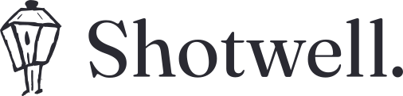

Material handling
Moving, staging, and positioning materials. Less time spent on repetitive handling, more time for the work that needs your crew's expertise.
Move the work forward
RoboticsWe develop intelligent machines for the physical work of building. More capability for your crew. More progress on site.
Let's build togetherConstruction is physical, skilled, and full of variables. Robotics has to meet it there.
Shotwell is developing robots that help construction companies take on demanding, repetitive work. We start with the task, the crew, and the conditions on site, then build the technology around them.
Our aim is simple: give the people who build more capacity to get the job done.
We're exploring where robotics can make the biggest difference in a construction team's day.
Moving, staging, and positioning materials. Less time spent on repetitive handling, more time for the work that needs your crew's expertise.
Move the work forwardTasks that demand the same motion, again and again. A practical starting point for machines that can work consistently under human supervision.
Make repetition usefulUnderstanding materials, tools, and changing surroundings. Building the perception and control that robots need to work in real construction environments.
Understand the surroundingsIn development. Shaped by real construction workflows.
Good robotics starts with a close look at real work. We're looking to connect with contractors and construction teams who want to help shape what comes next.
Tell us about your jobsiteLook at the repetitive, demanding work that slows your crew down.
Set expectations for quality, safety, supervision, and fit with your workflow.
Build around those requirements and evaluate progress against the needs of the job.
Tell us what you're building, and where robotics could help.